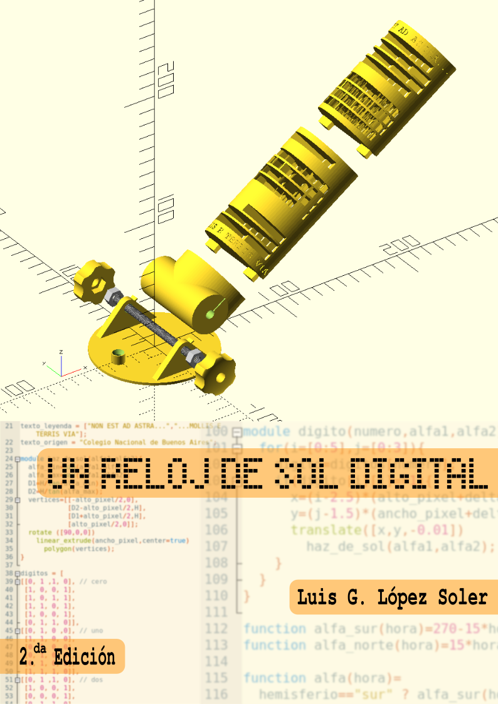

Bestellen bei Books on Demand
Bestellen bei Amazon

El presente librito, o manual, es el resultado de unas lecciones
escritas para un curso dictado durante el año 2021; de ahí el
carácter, quizás un tanto pretencioso, de 2da edición con
que quise distinguirlo.
Dichas lecciones, a su vez, reconocen una doble inspiración. La
primera de ellas llegó de la mano de uno de mis colegas docentes,
quien un día inolvidable llamó mi atención sobre el
mágico objeto protagonista de estas páginas, perfectamente desconocido
por mí hasta ese momento: el Reloj de Sol digital.
Tras varios días dedicados a regocijarme considerando su sabia y delicada maravilla,
sentí la necesidad de aplicarme a entender cómo reproducirlo: en otras
palabras, a entenderlo cabalmente. Para ello tuve primero que
descubrir un lenguaje de programación que me permitiera pensar y
expresar la construcción del reloj de Sol digital; afortunadamente lo
hallé en OpenSCAD, el cual aprendí a chapucear primero, y a ejercer
luego con mayor solvencia, mientras resolvía el reloj.
La segunda inspiración de las lecciones es más fácil de declarar, aun
cuando resulta mucho más misteriosa: soy docente, y siento la
invencible necesidad de enseñar todo lo que aprendo.
Edición para imprimir: https://github.com/lopezsolerluis/reloj-de-sol-libro/blob/main/pdfs-para-descargar/reloj-de-sol-libro.pdf
Edición para pantallas: https://github.com/lopezsolerluis/reloj-de-sol-libro/blob/main/pdfs-para-descargar/reloj-de-sol-pantalla.pdf
Repositorio GitHub: https://github.com/lopezsolerluis/reloj-de-sol-libro/